Hi, I'm Will.
One day this will be my website. Until then, enjoy this dog.

OK, so there's more than just the dog. I do things on the Internet.
@beiju
beiju
beiju
beiju
MathHammer 40k
RoboKnights
Mentaur.us
FRC Timer
Why “Beiju”?